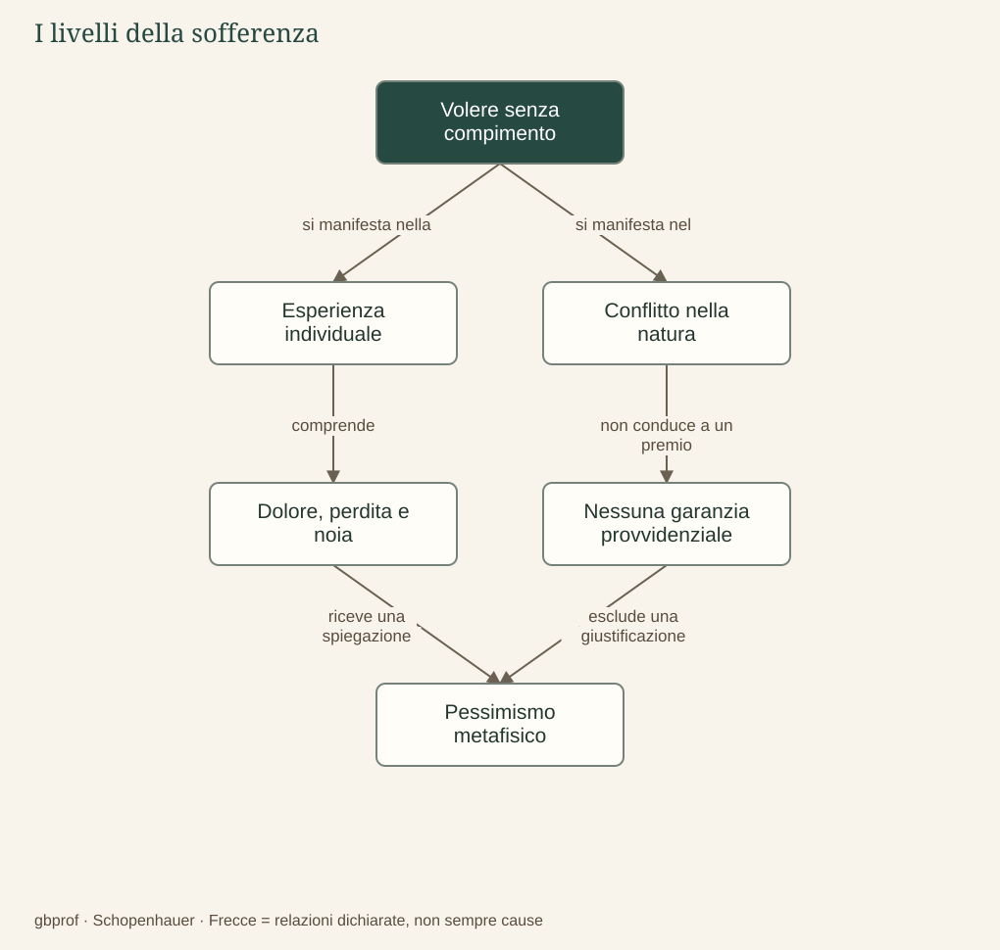

A · Comprendere Schopenhauer · 07
Il significato del pessimismo
La sofferenza è un incidente oppure appartiene alla struttura dell’esistenza?
Il pessimismo di Schopenhauer non consiste nell’abitudine di aspettarsi il peggio o nel temperamento di una persona malinconica. È una valutazione dell’esistenza fondata sulla sua interpretazione metafisica: se il mondo è manifestazione di un tendere privo di compimento, allora il dolore non è soltanto un difetto occasionale che un’organizzazione migliore potrebbe cancellare. La sofferenza appartiene al modo stesso nel quale la Volontà si manifesta negli esseri viventi.
Dal vissuto alla struttura
Possiamo chiamare esistenziale il livello nel quale incontriamo bisogno, delusione, perdita, malattia e morte nella vita concreta. Possiamo chiamare cosmico il livello nel quale l’analisi oltrepassa il singolo individuo e riguarda la natura nel suo complesso. Si tratta di distinzioni didattiche utili, non di due fasi biografiche rigidamente separate del pensiero schopenhaueriano. La dimensione metafisica spiega perché il filosofo attribuisca una portata universale a ciò che sperimentiamo individualmente.
Un animale non deve formulare una teoria del desiderio per soffrire la fame o il dolore. L’essere umano, tuttavia, aggiunge alla vulnerabilità del vivente la capacità di ricordare, confrontare, prevedere e temere la morte. La ragione amplia la conoscenza e le possibilità dell’azione, ma può anche moltiplicare l’inquietudine, rendendo presenti sofferenze passate e future. Per questo non è una garanzia automatica di felicità.
Un mondo senza giustificazione provvidenziale
Schopenhauer respinge l’idea che la sofferenza del singolo possa essere pacificamente giustificata attraverso l’armonia del tutto. Affermare che ogni male contribuisca necessariamente al migliore ordine possibile rischia di rendere invisibile il punto di vista di chi soffre. Nel suo sistema non troviamo un piano benevolo che trasformi ogni dolore in un mezzo per un bene finale, né una storia destinata a culminare nella riconciliazione universale.
Da questo non segue che tutti gli interventi concreti siano inutili. Curare una malattia, evitare una violenza o aiutare una persona può ridurre una sofferenza reale, e l’etica della compassione richiede precisamente di prenderla sul serio. La distinzione riguarda la portata dell’intervento: togliere un male determinato non equivale a eliminare la radice metafisica del volere. Confondere i due piani trasformerebbe il pessimismo in indifferenza, mentre Schopenhauer cerca anche un fondamento dell’agire non egoistico.
La sua diagnosi deve inoltre rimanere discutibile. Che la felicità non sia garantita non dimostra, da solo, che l’esistenza abbia un bilancio necessariamente negativo: per giungere a questa conclusione occorrono ulteriori argomenti sul valore dei piaceri, sulla forza del desiderio e sul rapporto tra dolore e significato. Il compito dello studente è ricostruire tali passaggi, senza ridurli a un’etichetta e senza assumere la posizione del filosofo come una prescrizione su come debba sentirsi.
Il problema in un’immagine
Dopo la lettura
Mappa di sintesi


Leggi la mappa in forma testuale
- Volere senza compimento si manifesta nella Esperienza individuale.
- Volere senza compimento si manifesta nel Conflitto nella natura.
- Esperienza individuale comprende Dolore, perdita e noia.
- Conflitto nella natura non conduce a un premio Nessuna garanzia provvidenziale.
- Dolore, perdita e noia riceve una spiegazione Pessimismo metafisico.
- Nessuna garanzia provvidenziale esclude una giustificazione Pessimismo metafisico.
Fermati sul problema
Il pessimismo rende inutile aiutare chi soffre?
Confronta il tuo ragionamento
No: alleviare un male concreto ha valore, anche senza eliminare la radice metafisica. Diagnosi metafisica e intervento concreto hanno portate diverse; la compassione richiede di ridurre il dolore.